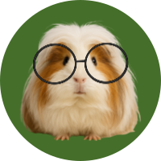
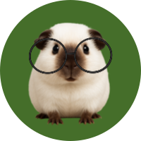

건강한 기니피그의 특징
- 활동적이고 코 주변, 귀, 눈이 깨끗하고 털가죽에 비어 있는 부분이 없다.
- 소변은 맑은 색이며 대변은 갈색이나 검은색의 타원형이다.
- 가끔 녹색빛을 띄는 부드러운 변을 보기도 하는데 이는 기니피그가 먹는 소화가 덜된 식변이며 정상적인 현상이다
아픈 기니피그의 특징
- 코 주변의 털이 빠지고 코 주변이 젖어 있거나 혹같은 것이 보인다.
- 흐릿하거나 푹 들어가거나 심하게 많이 튀어나온 눈을 하고 있다.
- 걸을 때 머리가 한쪽으로 쏠린다. 귀 밖에 하얀 각질이 생긴다.

칼슘과다, 요로결석
칼슘함량이 높은 건초, 야채, 사료를 너무 많이 지속적으로 섭취하면 발생한다. 불투명한 오줌을 싸는데 마르면 하얀 가루가 생긴다. 이 상태가 지속되면 요로결석으로 발전한다.요로결석이 생기면 소변을 보는 것을 매우 고통스러워하고 혈뇨가 나오기도 한다. 백색뇨 단계에서 막는 것이 가장 좋지만 요로결석이 발병했을 때에도 초기라면 약물치료만으로 호전시킬 수 있다.